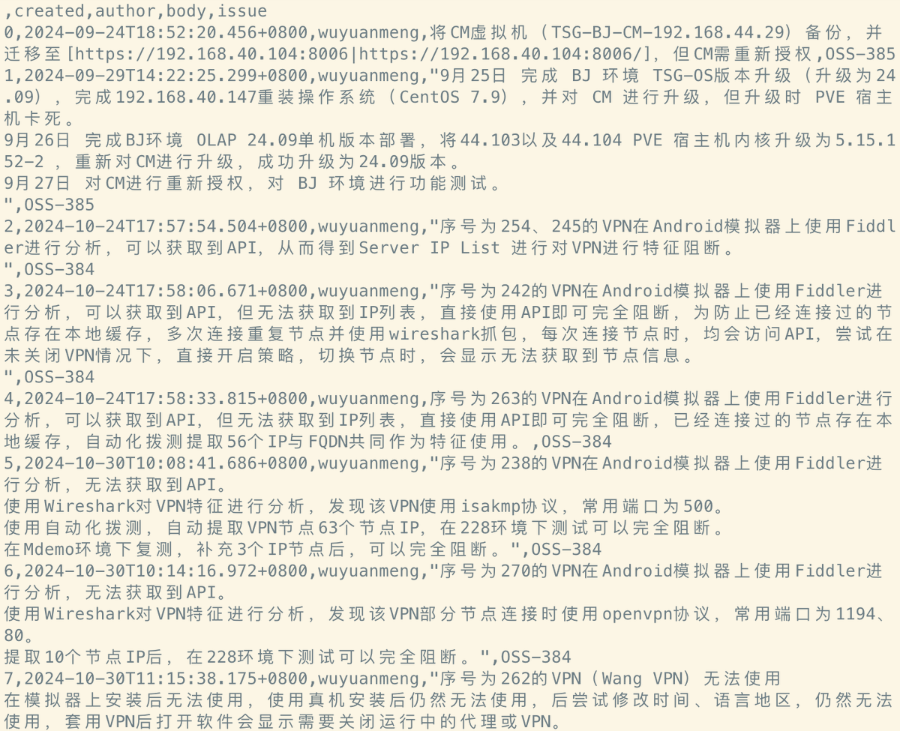
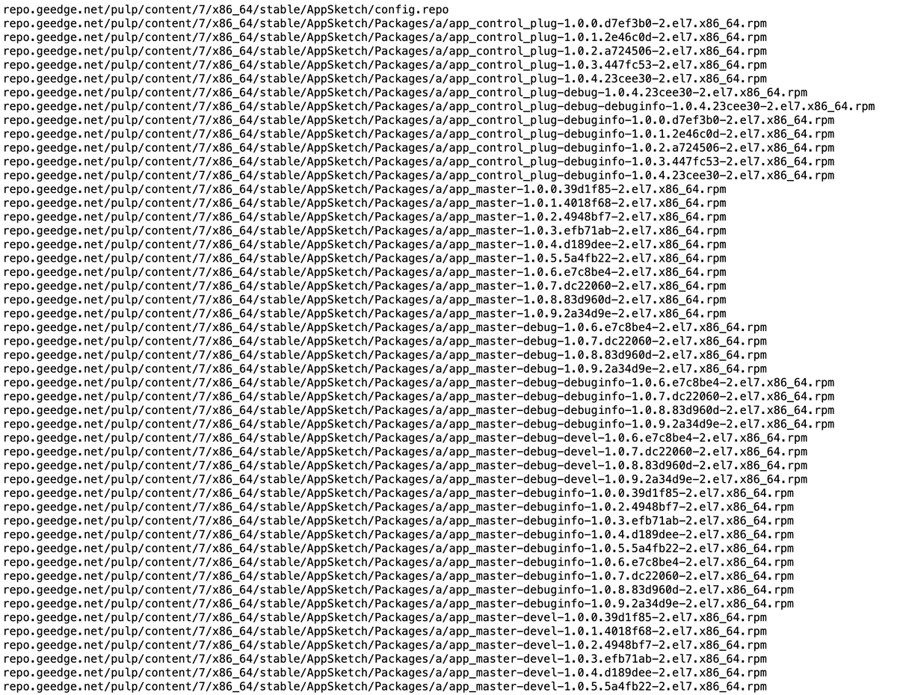
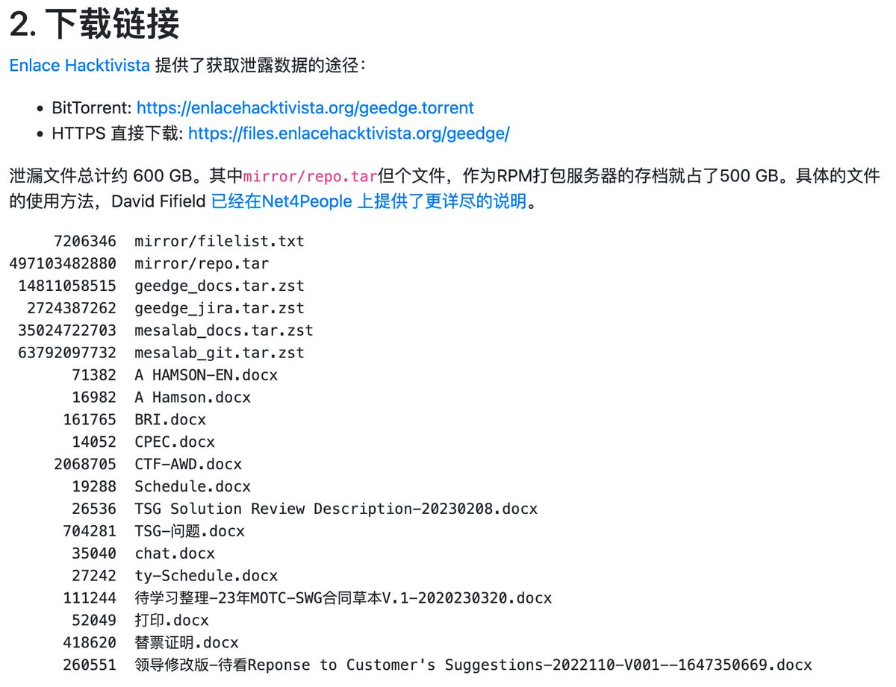

圣三一第一步枪🍥
@gdioiui
@Snow_Xue_ @ElysiumFengxuan @bghtnya 如果打不开需要全局，路由规则存在问题 再次强调不建议使用套壳vpn！（）



gfw.report
@gfw_report
中国防火长城（GFW）今日发生史上最大规模的内部文档泄漏。超过500GB的源代码、工作日志与内部交流记录外泄，揭示了GFW的研发与运作细节。
泄漏源自GFW核心研发力量之一的积至公司（首席科学家方滨兴）及中科院信息工程研究所第二研究室的处理架构组 MESA https://t.co/1sGkUlPOPj
雪🍥
@Snow_Xue_
@gdioiui @ElysiumFengxuan @bghtnya 额？必须挂全局嘛？之前白嫖了时长就用着了